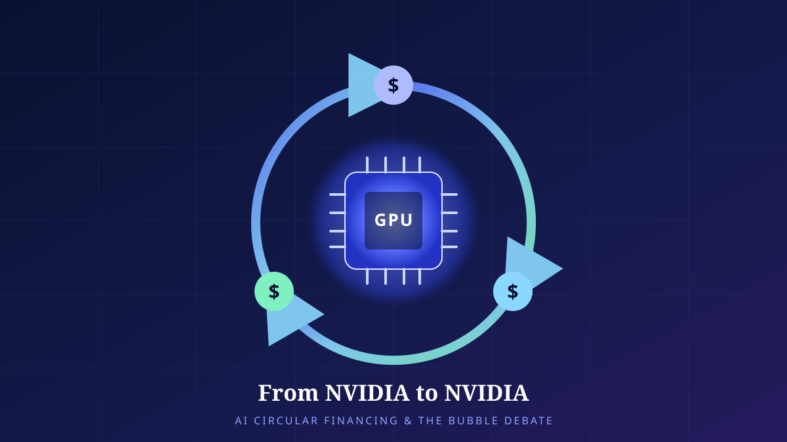

From NVIDIA to NVIDIA
NVIDIA is investing up to $100 billion in OpenAI. We calmly dissect — through an engineer's eyes — the loop of money circling a single company that is supplier, customer, and investor at once, and the 'bubble' debate around it.

A Deal Where the Same Name Appears Three Times
Picture a single flow-of-funds chart. Follow the arrows and the money starts at NVIDIA, flows into OpenAI, leaves OpenAI as payment for chips, moves on to data centers and the cloud, and finally returns to NVIDIA's revenue account. The same company's name is written at both the start and the end. At both ends of the supply chain — and on the investment line running between them — one name appears three times over.
Why the picture makes people uneasy is intuitive enough. If a company funds its own customer, and that customer uses the money to buy the company's own products, is the "revenue" that results genuine market demand, or just a number circling around the ledger? That "AI bubble" hardened into a discourse of its own after the autumn of 2025 rests precisely on the scent of this circularity.
But drawing conclusions from a scent alone is not the engineer's way. Let us begin by distinguishing exactly what has been announced, and where certainty ends and estimation begins.
What Was Announced, and What Is Not Yet Settled
On September 22, 2025, NVIDIA and OpenAI formally announced a strategic partnership. It came down to three points. First, they would deploy 10GW of NVIDIA systems going forward. Second, to support that build-out, NVIDIA would invest up to $100 billion in OpenAI in stages. Third, the first 1GW would begin operating on NVIDIA's next-generation Vera Rubin platform in the second half of 2026. By NVIDIA's own account, a scale of 10GW corresponds to roughly 4 to 5 million GPUs.
What matters is the direction of the money. Piecing together the announcement and the follow-up reporting, OpenAI pays cash for the chips and systems, while NVIDIA invests in OpenAI in the form of a non-controlling equity stake. The money NVIDIA invests does not come back "tagged" directly as OpenAI's chip payment — but in the big picture the two flows are interlocked within the same partnership. It is a structure in which the supplier takes an equity position in its customer's capital structure, and that customer becomes the supplier's largest source of revenue.
And one more thing. This partnership was an announcement with the character of a letter of intent (LOI), and for several months afterward it remained unconfirmed as a final contract. In November 2025, NVIDIA included risk language to the effect that there was "no assurance" the deal with OpenAI would be reached, and its chief financial officer (CFO), Colette Kress, described the agreement as "still not definitive." As late as December, the $100 billion agreement was reported to be at a pre-signing stage. So we must keep in mind throughout that what we are dealing with is not "already-hardened fact" but an announced broad framework plus details still left open.
Who Sells to Whom, and Who Funds Whom
To see the loop for what it is, we have to peel the arrows apart one by one. In this partnership NVIDIA wears three hats at once: the supplier that sells the chips, the investor in the company those chips run on, and the potential customer and validator of the services that company builds. The diagram below is a simplified view of how these three roles close into a single loop.
The heart of the skeptical view is that ① and ③ in this diagram come out of, and return to, effectively the same pocket. Put bluntly, the supplier is financing its own revenue, so that revenue is no proof of "outside demand." What is more, this structure is not confined to the NVIDIA–OpenAI pair. Bloomberg visualized the mutual payments and the equity and cloud contracts among Microsoft, OpenAI, and NVIDIA as a single "circular deals" map, in which the three companies are entangled as customer, investor, and infrastructure supplier to one another.
The counterargument is far from weak. Vendor financing — a supplier shouldering part of a large customer's upfront investment — is a long-standing practice in the telecom and semiconductor industries, and is not in itself evidence of fraud or a bubble. Equity investment and the sale of goods are, in accounting terms, separate transactions, and NVIDIA's stake is a non-controlling minority interest that cannot compel OpenAI's purchasing decisions. The problem is not the fact that the structure is circular, but whether enough real end demand to sustain the loop arrives in time. So the next chapter turns to the numbers.
Chapter 4. Unit EconomicsRevenue Rises Gently; Capex Goes Vertical
The center of gravity in this debate rests, in the end, on a single question: when do the curves of money going in (capital expenditure) and money coming out (revenue) meet? From here on, one must read with the clear understanding that these are not announced facts but analysts' estimates. An insight note from the asset manager Man Group put forward the following figures.
| Item | Scale | Nature |
|---|---|---|
| OpenAI 2025 revenue | ≈ $13B | [analyst estimate] |
| 8-year capex commitment (cumulative) | ≈ $1.4T | [analyst estimate] |
| Projected single-year operating loss, 2028 | ≈ $74B | [analyst estimate] |
| NVIDIA → OpenAI investment commitment | Up to $100B | Announced (LOI, unconfirmed) |
| Deployment scale | 10GW · 4–5 million GPUs | Announced |
There is no need to take this table at face value. The point lies rather in the gap in scale. On one side is revenue on the order of $13 billion a year; on the other, a spending commitment of $1.4 trillion spread over eight years. The two differ by orders of magnitude. That this gap will be filled by explosive future demand growth is the premise of the optimists; that it will not be filled is the premise of the skeptics.
Why is the capex curve so steep? Large-scale AI infrastructure front-loads three kinds of cost: the upfront investment in GPUs and systems, the rapid depreciation of that hardware, and the enormous power bills of running it around the clock. Semiconductor generations are short, so their economic life expires within a few years, and 10GW of power is comparable to the consumption of an entire city. In other words, the money goes in heavily now, while the revenue that would justify the investment follows later, and gently. The figure below expresses this asymmetry conceptually.
The Path Where It Holds, and the Path Where It Breaks
A circular structure is neither good nor evil in itself. Whether it becomes "growth funded ahead of time" or "a self-inflated bubble" depends on a handful of conditions. Let us set the bull case and the bear case on the same scale.
| Issue | Loop holds (bull case) | Loop breaks (bear case) |
|---|---|---|
| End demand | Enterprise and consumer AI spending surges every year and catches up to the curve | Real usage and billing cannot keep pace with the speed of infrastructure investment |
| Circular structure | Standard vendor financing; equity and sales are separate | Self-referential growth in which the supplier funds its own revenue |
| Unit economics | Inference costs plunge as model efficiency and chip performance improve | Depreciation and power costs erode gross margin |
| Financing | Ultra-low rates and abundant capital underpin the infrastructure | If rates and liquidity tighten, capex commitments get canceled |
| Contract status | Staged execution allows adjustment as demand is observed | Whether the LOI firms into a final contract is still uncertain |
| Concentration risk | Concentrating resources in leaders secures economies of scale | The whole system is coupled to a few firms and a few chips |
The path where the loop holds converges, in the end, on one thing: the money poured into infrastructure ahead of time being repaid by the real end demand that follows. If enterprises gain genuine productivity from AI and willingly pay for it, and if inference costs fall quickly through hardware and model efficiency so that gross margins recover, then the capex curve and the revenue curve will meet — belatedly, but they will meet. The staged-execution structure favors this scenario, because if demand is lukewarm the next tranche of investment can simply be slowed. Indeed, the very fact that the partnership has stayed "unconfirmed" for months can be read as a signal that both sides are leaving themselves room to adjust the pace.
The path where it breaks is the opposite. If end demand fails to arrive as expected while depreciation and power costs gnaw at gross margin, then at some stage a capex commitment gets canceled or postponed. In that moment one link of the loop snaps, and the supplier's "revenue outlook" is the first thing to shake. What magnifies the problem is concentration. When the entire system is tightly coupled to a handful of leading firms and a specific chip architecture, a crack in one link spreads easily to the whole. The reason bubble fears mounted around November 2025 — grounded in data-center investment excessive relative to revenue — was precisely this chain effect.
Not "Fake or Real," but "In Time or Not"
Looking at this debate as an engineer, I keep thinking of a system's latency and buffer. Investment in AI infrastructure is a vast buffer filled in advance with future demand. A large buffer absorbs a surge of requests smoothly, but whatever is stocked and not sold becomes a cost in its own right. The circular financing structure is a financial device for stacking this buffer faster and larger than anyone else. Whether it was a shrewd preemptive investment or reckless overcapacity will only be settled after demand — a lagging indicator — arrives.
So I have no wish to close this matter with the binary of "bubble or not." Acknowledging the announced facts as facts (10GW, up to $100 billion, an unconfirmed LOI) and holding the estimates in parentheses as estimates (Man Group's revenue, capex, and loss projections), the dashboard we actually need to watch narrows to a single gauge: is end demand catching up to the capex curve in time? Which way that needle moves is what turns the same circular picture into either "growth pulled forward" or "an inflated bubble."
The loop in which money leaves NVIDIA and returns to NVIDIA is, in itself, neither guilty nor innocent. What would make the loop guilty is not the circularity but the gap — a situation in which no one fills the lag opened up between investment and demand. What we are witnessing now is a single bet, as vast in its uncertainty as in its scale, placed across that lag.
References
- NVIDIA, “OpenAI and NVIDIA Announce Strategic Partnership to Deploy 10GW of NVIDIA Systems” (2025-09-22). 10GW deployment; up to $100B staged investment; first 1GW on Vera Rubin in H2 2026. https://nvidianews.nvidia.com/news/openai-and-nvidia-announce-strategic-partnership-to-deploy-10gw-of-nvidia-systems
- OpenAI, “OpenAI and NVIDIA announce strategic partnership” (2025-09-22). https://openai.com/index/openai-nvidia-systems-partnership/
- CNBC, “Nvidia to invest up to $100 billion in OpenAI” (2025-09-22). Structure: OpenAI pays cash; NVIDIA takes a non-controlling equity stake. https://www.cnbc.com/2025/09/22/nvidia-openai-data-center.html
- CNBC, “Nvidia says no assurance of deal with OpenAI after $100 billion pact” (2025-11-19). Not a definitive deal. https://www.cnbc.com/2025/11/19/nvidia-says-no-assurance-of-deal-with-openai-after-100-billion-pact.html
- Fortune, “Nvidia–OpenAI $100 billion deal not signed yet, Colette Kress” (2025-12-02). CFO: “still not definitive.” https://fortune.com/2025/12/02/nvidia-openai-deal-not-signed-yet-100-billion-rally-colette-kress/
- Man Group, “The AI Bubble.” [analyst estimate] OpenAI 2025 revenue ≈ $13B; 8-year capex commitment ≈ $1.4T; projected 2028 operating loss ≈ $74B. The financial figures in this article rest on these estimates and are not established fact. https://www.man.com/insights/the-ai-bubble
- Bloomberg, “AI’s Circular Deals” (2026). Visualization of the mutual payments and circular deals among Microsoft, OpenAI, and NVIDIA. https://www.bloomberg.com/graphics/2026-ai-circular-deals/
- NPR, “The AI bubble question: revenue, data centers, and the risk of a bust” (2025-11-23). Concern over data-center investment overheating relative to revenue. https://www.npr.org/2025/11/23/nx-s1-5615410/ai-bubble-nvidia-openai-revenue-bust-data-centers
- “AI bubble,” Wikipedia. An overview of the “AI bubble” discourse. https://en.wikipedia.org/wiki/AI_bubble
- Figures 1 and 2 are original diagrams drawn by the author, simplifying the structures and concepts from the sources above; the curves in Figure 2 are conceptual representations, not actual figures. This article is not investment advice.
Read next
 AI · Explainer18
AI · Explainer18Four Ways Retrieval Rescues Intelligence — Lexical, Semantic, Hybrid, and Graph RAG, and the Anatomy of Hallucination
A large language model's knowledge freezes the moment training ends. Retrieval-augmented generation (RAG) fills that gap by pulling in documents from outside the model. We dissect four retrieval architectures — Lexical, Semantic, Hybrid, and Graph — from first principles, and examine how they reduce hallucination and what still remains.
 AI · Explainer17
AI · Explainer17The Protocol That Became AI's HTTP: MCP and the Interoperability-Standard War
The moment chatbots turn into 'acting agents,' the bottleneck is no longer intelligence but the standard for connection. We anatomize how Anthropic's MCP became the de facto standard — its architecture, its politics, and the security homework that remains.